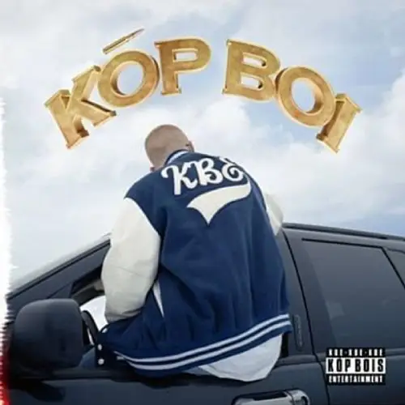
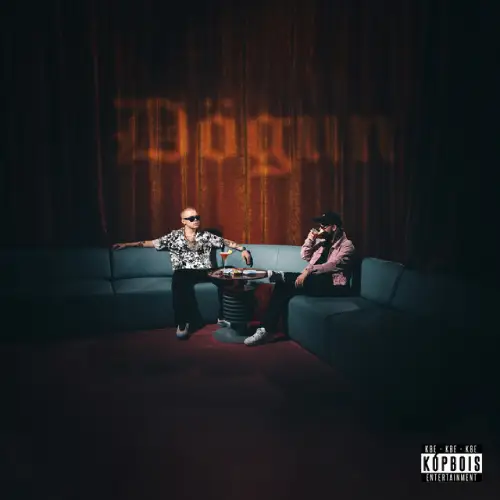
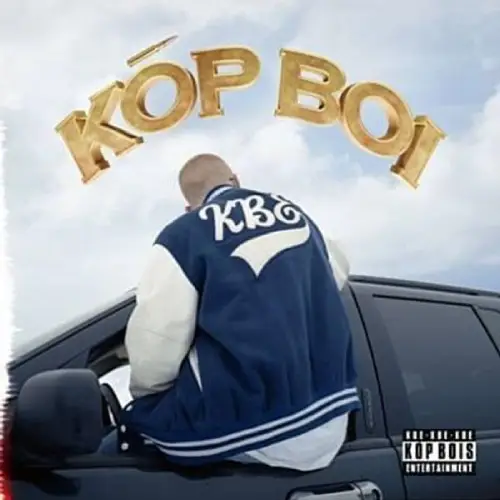
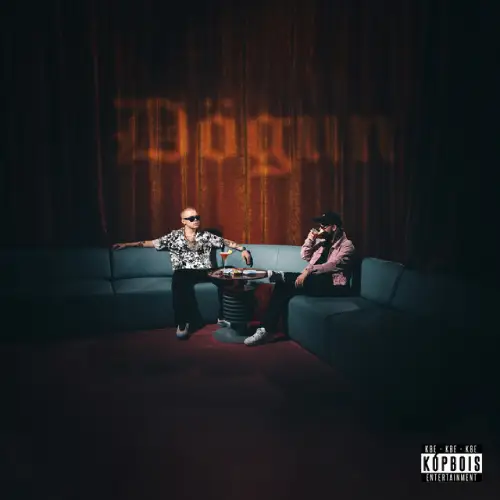

Almennt Um Herra
Herra ólst upp í Hveragerði og síðar í Kópavogi. Hann tilheyrir hóp Kópavogs-peyja sem gefa út efni undir merkinu Kóp Bois Entertainment eða KBE. Hann lærði við Menntaskólann í Kópavogi og er sonur Árna Magnússonar, félagsmálaráðherra frá 2003 til 2006.
Herra bjó til texta yfir bandarísk rapplög árið 2014 og tók þá upp. Hann gaf út upptökurnar á YouTube. Lögin heita „Elías“, „Til í allt 2.5“, „Herra Hnetusmjör“, „Blóðþyrstir úlfar“ og „Við erum í húsinu“.
Árið 2015 gaf hann út sína fyrstu breiðskífu, Flottur strákur. Næstu plötur frá rapparanum voru KÓPBOI, Hetjan úr herfinu, Dögun, Erfingi Krúnunnar og Flottur strákur 2.
Árið 2020 kom út ævisaga hans eftir Sóla Hólm undir titlinum Herra Hnetusmjör: Hingað til. Hann hefur verið dómari í síðustu tveimur þáttaröðum af Idol. Árið 2023 gekkst hann til liðs við strákahljómsveitina IceGuys. Hann söng lokalag Áramótaskaupsins 2023.
Herra Hnetusmjör gaf út plötu núna á þessu ári sem heitir "KBE kynnir: Legend Í Leiknum" sú plata skaust fljótt uppá toppin. Það voru útgáfutónleikar í háskólabío og það var gert peysu og boli sem voru gerð í samstarfi við Metta sport sem var hægt að kaupa á tónleikunum og seinna meir á vefsíðu og verslun Metta sport.
Árni Páll Árnason
Árni Páll Árnason (f. 31. ágúst 1996), þekktur undir sviðsnafninu Herra Hnetusmjör, er íslenskur tónlistarmaður og rappari.
Hérna að neðan er eitt af fyrstu lögum sem herra bjó til texta yfir bandariskt rapp lag frá Eminem sem heitir "real slim shady" og ég vil vara við dónalegan texta, það sést að textin hans herfur breyst mikið yfir árin. Það er hægt að finna þetta lag inná soundcloud undir nafninu Herra Hnetusmjör.Frægasta plata hjá Herra Hnetusmjör
Herra Hnetusmjör gaf þessa plötu út 1. Desember árið 2017, það eru 10 lög á plötunni og samtals er platan 38 mínútum á lengd. þetta var strax mjög fræg plata og frægasta lagið á henni er "Lítur Allt Út Fyrir Það" sem að hann og Joe Frazier gerðu.
Músik Videó hja Herra Hnetusmjor
Þetta er það frægasta lag af plötunni "KBE kynnir: KÓPBOI" þarf sem eins og stendur að ofan að herra hnetusmjör gerði með góðum félaga sínum og rappara Joe Frazier, lagið er með yfir 150 þúsund áhorf inná YouTube og mikið meir á álikum stoðum Spotify.
Plötur
.webp) 


